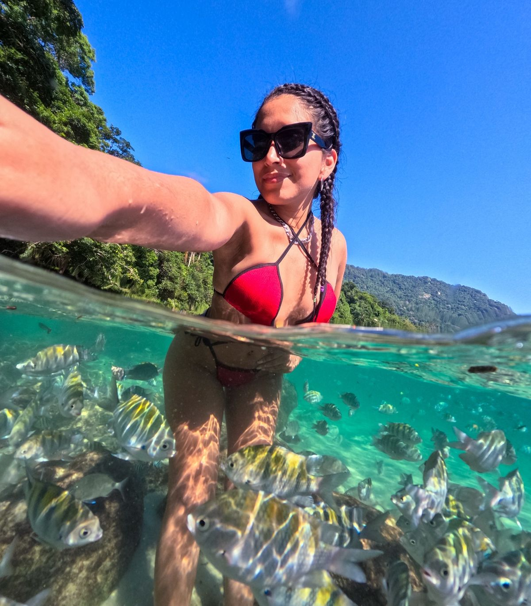

150lugares
Espaço para o grupo todo.
Passeio de escuna saindo do Centro de Angra dos Reis.

Estrutura nova, pensada para o grupo curtir o mar.
Espaço para o grupo todo.

Do convés direto para o mar.

Para boiar ao lado da escuna.

Para ficar à vontade entre um mergulho e outro.
As paradas do nosso Instagram, na ordem do passeio. O mar decide o resto.
Centro de Angra dos Reis, na região da Estação Santa Luzia.
23°00′30″S · 44°18′56″W
Água cristalina para nadar.
23°05′07″S · 44°14′24″W
Parada para o banho e para as fotos.
23°05′29″S · 44°14′08″W
Mar calmo, areia e mata.
23°05′07″S · 44°14′07″W
Última parada antes da volta.
Coordenadas a confirmarFotos reais de quem já foi.



Quatro toques e a mensagem vai pronta para o WhatsApp.
“Ótimo passeio, tripulação animada e excelentes bebidas.”
Klaus Oliveira · Google
“Escuna grande, aconchegante e muito bem organizada.”
Flávio Seminário · Google
Região da Estação Santa Luzia. Ponto e horário confirmados no WhatsApp.
Até 150 passageiros.
Do Centro de Angra dos Reis, na região da Estação Santa Luzia.
Escorrega, tapete flutuante, som, bar e churrasqueira, área coberta e solário.
Sim. Aniversários, excursões e empresas. Peça no WhatsApp.